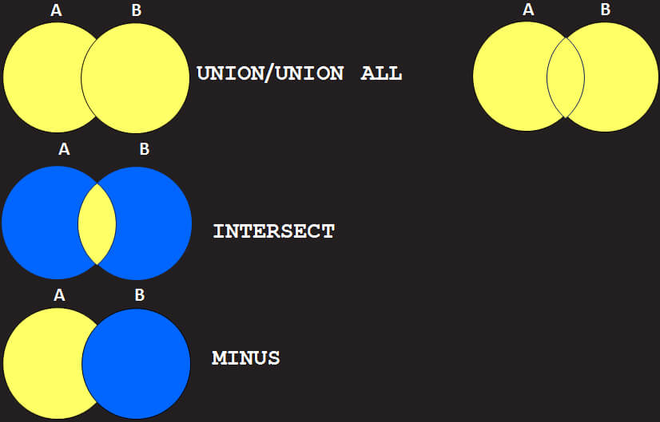
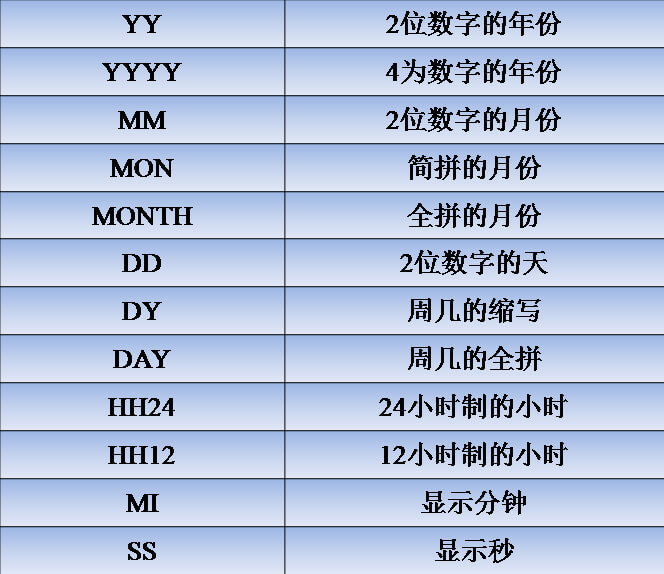
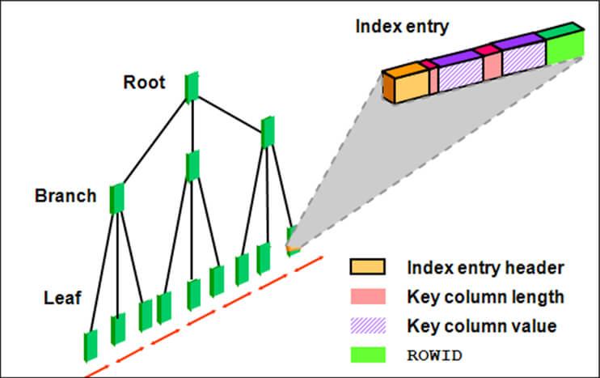

Database
ORACLE
- DDL（数据定义语言） Data Definition Language
- 创建表
- CREATE TABLE [schema.]table_name (
colum_name datatype [DEFAULT expr][,...]
)
- DESC table_name 查看表结构
- gender CHAR(1) DEFAULT 'M'
- name VARCHAR(20) NOT NULL
- 修改表
- RENAME TABLE old_name TO new_name
- ALTER TABLE table_name ADD (column datatype [DEFAULT expr]
[,column detatype...])
- ALTER TABLE table_name DROP (column)
- ALTER TABLE table_name MODIFY (column datatype [DEFAULT expr]
[,column datatype...])
- 删除表
- 删除表的数据
- TRUNCATE TABLE table_name -- 删除比DELETE快
- 删除索引???
- DML（数据操作语言） Data Manipulation Language
- INSERT INTO table_name[(column[,column...])]
VALUES(value[,value...])
- UPDATE table_name
SET column = value [,column = value]...
[WHERE condition]
- DELETE [FROM] table_name [WHERE condition]
- TCL（事务控制语言） Transaction Control Language
- COMMIT: 提交
- ROLLBACK: 回滚
- SAVEPOINT: 保存点
- DQL（数据查询语言） Data Query Language
- 基础查询
- SELECT empno AS id, ename "Name", sal*12 "Annual Salary" FROM emp;
-- 别名中间加AS，别名中区分大小写，或包含空格，必须用双引号引以来
- SELECT ename, sal, job FROM emp WHERE deptno <> 10;
- SELECT ename, job FROM emp WHERE ename LIKE '_A%';
-- 模糊查询; %：0到多个, _：单个
- SELECT ename, sal, deptno FROM emp WHERE deptno NOT IN(10, 20) AND sal BETWEEN 1500 AND 3000;
- SELECT ename, job, sal FROM emp WHERE sal > ANY/ALL(3000, 4000 ,5000);
- SELECT ename, job, sal FROM emp WHERE ename = UPPER('rose');
- SELECT DISTINCT deptno, job FROM emp ORDER BY deptno ASC, job DESC;
-- 默认ASC，NLL视作最大
- SELECT MAX(ename), MIN(sal), SUM(sal), AVG(sal), COUNT(comm) FROM emp;
-- MAX/MIN可统计任何类型，聚合函数忽略NULL值
- SELECT deptno, MAX(sal) FROM emp GROUP BY deptno HAVING MAX(sal)>2000;
- 查询语句执行顺序：
- from: 后→前，右→左 -- 数据量较少的表尽量放后面
- where: 下→上，右→左 -- 将能过滤掉最大数量记录的条件写在WHERE的最右
- group by: 左→右
- having: 消耗资源 -- 尽量避免使用，在检索出所有记录之后才对结果集进行过滤
- select: 少用*号，尽量取字段名称 -- 通过数据字典将*号...消耗时间
- order by: 左→右 -- 消耗资源
- 关联查询
- SELECT e.ename, d.loc FROM emp e, dept d; -- 笛卡尔积
- SELECT e.ename, d.loc FROM emp e, JOIN dept d ON USING deptno;
LEFT/RIGHT/FULL OUT JOIN...ON -- 左/右/全外连接
- SELECT e.ename, m.ename, e.job, m.job FROM emp e, emp m
WHERE e.mgr=m.empno; -- 自连接 不等值连接???
- 高级查询
- 子查询
- SELECT empno, ename, sal, deptno FROM emp
WHERE deptno IN(SELECT deptno FROM emp -- 返回多行，使用多行比较符：
WHERE job='SALESMAN'); IN、ALL、ANY
- SELECT deptno, dname, FROM dept d
WHERE EXISTS(SELECT * FROM emp e WHERE d.deptno=e.deptno);
- SELECT e.ename, e.sal, e.deptno FROM emp e,
((SELECT deptno, AVG(sal) avg_sal FROM emp GROUP BY deptno) t)
WHERE e.deptno=d.deptno AND sal>t.avg_sal; ↖ 行内视图、匿名视图
- SELECT e.ename, e.sal, e.deptno, ↙ 放在SELECT子句，外连接的另一种表现
(SELECT d.loc FROM dept d WHERE d.deptno=e.deptno) deptno
FROM emp e;
- 分页查询
- SELECT *
FROM (SELECT ROWNUM rn, t.*
FROM(SELECT ename, sal, deptno
FROM emp ORDER BY sal DESC) t)
WHERE ROWNUM <= 10)
WHERE rn > 5;
- DECODE函数
- SELECT DECODE(job, 组
'PRESIDENT','BOSS',
'MANAGER','VIP','ANALYS','VIP'
'OPERATION') job, COUNT(1)
FROM emp GROUP BY DECODE(......); -- 按字段内容分
- SELECT deptno, dname, loc FROM dept
ORDER BY DECODE(dname, -- 按字段内容排序
'RESEARCH',1,'OPERATIONS',2,'SALES',3), loc;
- SELECT ename, job, sal,
CASE job WHEN 'MANAGER' THEN sal * 1.2 -- case，类似if-else
WHEN 'ANALYST' THEN sal * 1.1
WHEN 'SALESMAN' THEN sal * 1.05
ELSE sal END
bonus
FROM emp;
- 排序函数
- SELECT ename, deptno, sal,
ROW_NUMBER() OVER(PARTITION BY deptno ORDER BY sal DESC)
sal_rank -- 连续且唯一
FROM emp;
- ...RANK()... -- 不连续、不唯一
- ...DENSE_RANK()... -- 连续、不唯一
集合

- SELECT ename, job, sal FROM emp WHERE job = 'MANAGER'
UNION -- 去掉重复，第1列升序
SELECT ename, job, sal FROM emp WHERE sal> 2500;
- ...UNION ALL... -- 包括重复，不排序
- ...INTERSECT... -- 交集，第1列升序
- ...MINUS... -- 差集，结果集1-结果集2
- 高级分组函数
- SELECT year_id,month_id,day_id,SUM(sales_value) sum
FROM sales GROUP BY ROLLUP(year_id,month_id,day_id)
ORDER BY year_id,month_id,day_id;
- SELECT year_id,month_id,day_id,SUM(sales_value) sum
FROM sales GROUP BY CUBE(year_id,month_id,day_id)
ORDER BY year_id,month_id,day_id;
- SELECT year_id,month_id,day_id,SUM(sales_value) sum
FROM sales GROUP BY GROUPING SETS
((year_id,month_id,day_id),(year_id,month_id))
ORDER BY year_id,month_id,day_id;
- DCL（数据控制语言） Data Control Language
- GRANT: 授予权限 GRANT...TO...
- REVOKE: 收回权限
- CREATE USER: 创建用户???
- 字符串操作
- 字符串类型
- CHAR(n): 定长，最大2000字节，不指定长度默认为1字节
- VARCHAR2(n): 变长，最大4000字节，必须指定长度
- LONG： VARCHAR2加长版，最大2G；一个表只能有一个LONG；
不能作为主键；不能建索引；不能出现在查询条件中...
- CLOB： 定长或变长，最大4G，ORACLE建议用CLOB代替LONG
- 字符串函数
- SELECT CONCAT(CONCAT(cahr1, char2),char3) FROM dual;
SELECT char1 || char2 || char3 FROM dual;
- SELECT ename, LENGTH(char) FROM dual;
- SELECT UPPER(char),
LOWER(char),
INITCAP(char) FROM dual;
- SELECT TRIM(c2 from c1) AS t1,
LTRIM(c1[, c2]) AS t2,
RTRIM(c1[, c2]) AS t3 FROM dual;
- SELECT RPAD(char1, n, char2) ename FROM dual;
SELECT LPAD(char1, n, char2) ename FROM dual;
- SELECT SUBSTR(char, m[, n]) word FROM dual; -- 从1开始，即使0也是1开始
- SELECT INSTR(char1,char2[,n [,m]]) From dual; m-第几次出现；如没找到返回0
- 数值操作
- 数值类型???
- NUMBER(p,s) DECIMAL(p,s) DEC(p,s) INTEGER INT
SMALLINT FLOAT(b) DOUBLE PRECISION REAL
- 数值函数
- SELECT ROUND(45.678,2) round FROM dual; --45.68
SELECT ROUND(45.678,-1) round FROM dual; --50
- SELECT TRUNC(45.678,2) TRUNC FROM dual; --45.67
SELECT TRUNC(45.678,-1) TRUNC FROM dual; --40
- SELECT CEIL(45.678) ceil FROM dual; --46
- SELECT FLOOR(45.678) floor FROM dual; --45
- SELECT ename, sal MOD(sal, 1000) FROM dual;
- 日期操作
- 日期类型
- Date: 7个字节； 世纪(1)、年(2)、月(3)、天(4)、时(5)、分(6)、秒(7)
- TIMESTAP: 7或11个； 世纪(1)、年(2)、月(3)、天(4)、时(5)、分(6)、秒(7)、
纳秒(8~11)
- 日期关键字
- SELECT SYSDATE FROM dual; -- 本质是一个内部函数；默认格式DD-MON-RR
- SELECT TO_CHAR(SYSTIMESTAMP, 'ss.ff') FROM dual;
日期转换函数

- SELECT TO_DATE('1982年01月01号', 'YYYY"年"MM"月"DD"号"') FROM dual;
- SELECT TO_CHAR(SYSDATE, 'YYYY"年"MM"月"DD"号"') FROM dual
- MON-简拼月份 DY/DAY-周几 HH24/HH12 MI-分钟 SS-秒
- 日期常用函数
- SELECT LAST_DAY(SYSDATE) FROM dual; -- 返回日期date所在月的最后一天
- SELECT ADD_MONTHS(SYSDATE, 1) FROM dual;
- SELECT MONTHS_BETWEEN(SYSDATE,TO_DATE('1990-10-16','YYYY-MM-DD'))
FROM dual; -- 计算两个日期相隔多少个月
- SELECT NEXT_DAY(SYSDATE, 5) FROM dual; -- 返回date日期的下一个周4的日期
- SELECT GREATEST/LEAST(expr1[, expr2[, expr3]) FROM dual;
- SELECT EXTRACT(HOUR FROM TIMESTAMP '2008-10-10 10:10:10') FROM dual;
- 空值操作 数据未知或暂时不存在
- SELECT NULL + 1 FROM dual; --null
- SELECT NULL || '1' FROM dual; --'1'
- UPDATE * FROM student SET gender = NULL;
SELECT * FROM student WHERE gender IS NOT NULL;
- gender CHAR(1) NOT NULL;
- SELECT ename, sal, comm, sal + NVL(comm, 0) salary FROM emp;
- SELECT ename, sal, comm, NVL2(comm, sal + comm, sal) salary FROM emp;
- 视图（虚表/VIEW）
- CREATE [OR REPLACE] VIEW view_name[(alias[, alias…])] AS subquery;
- 概念：本身包含数据；执行DML操作实际上是对基表的DML操作
- 简单视图：基于单表；不包含任何函数运算、表达式或分组函数
- 复杂视图：基于单表；包含了单行行数、表达式、分组函数或GROUP BY子句;
必须为子查询中的表达式和函数定义别名；不允许DML操作
- 连接视图：基于多表
- 作用
- 简化复杂查询
- 限制数据访问
- 执行DML操作基本原则：
-
- 约束
- ...WITH CHECK OPTION; 通过视图所做的修改，必须在视图的可见范围???
- ...WITH READ ONLY; 保证视图对应的基表数据不会被非法修改
- 数据字典
- SELECT object_name FROM user_objects WHERE object_type = 'VIEW';
- SELECT text FROM user_views WHERE view_name = 'V_EMP_20';
- SELECT column_name, insertable, updatable, deletable
FROM user_updatable_columns WHERE table_name = 'V_EMP_10';
- 删除视图： DROP VIEW view_name; 不会影响基表数据
- 序列
- 可高效地为一个表或多个表提供唯一键值
- CREATE SEQUENCE [schema.]sequence_name
- [START WITH i] [INCREMENT BY j] -- 如没设置，i默认为1，j默认步进为1
- [MAXVALUE m | NOMAXVALUE]
- [MINVALUE n | NOMINVALUE]
- [CYCLE | NOCYCLE][CACHE p | NOCACHE]; -- CACHE：预读取缓存，提高生成效率，默认20
- 伪列
- INSERT INTO student (id,name,gender)
VALUES (seq_student_id.NEXTVAL,'變態輝','m');
- SELECT seq_student_id.CURRVAL FROM dual; -- 必须先执行一次NEXTVA
- 删除序列： DROP SEQUENCE emp_seq;
索引

- 提高查询效率；一旦建立就被Oracle系统自动维护
- CREATE [UNIQUE] INDEX idx_emp_job_sal ON emp(job, sal);
-- 复合索引（多列索引）
- CREATE INDEX idx_emp_ename_upper ON emp(UPPER(ename));
- ALTER INDEX index_name REBUILD
-- 如经常在索引列执行DML操作，需要定期重建索引;
- 合理使用索引：
- 经常出现在WHERE子句中的列
- 经常出现在ORDER BY、DISTINCT后面的字段；顺序要一致
- 经常作为表的连接条件
- 不要在经常做DML操作的表建索引
- 不要在小表上建立索引
- 索引不是越多越好
- 删除很少被使用的、不合理的索引
- 约束(CONSTRAINT)
- 非空约束(Not Null)，简称NN
- hiredate DATE NOT NULL,
或 hiredate DATE CONSTRAINT employees_hiredate_nn NOT NULL
-- 建表时添加非空约束
- ALTER TABLE employees MODIFY (eid NUMBER(6) null); -- 取消非空约束
- 唯一性约束(Unique)，简称UK
- email VARCHAR2(50) UNIQUE,
或 email VARCHAR2(50) CONSTRAINT emplyees_email_uk UNIQUE,
或 CONSTRAINT emplyees_email_uk UNIQUE(mail)
-- 建表时添加唯一约束
- ALTER TABLE employees ADD CONSTRAINT employees_name_uk UNIQUE(name);
-- 建表后增加唯一约束
- 主键约束(Primary Key)，简称PK
- 相当于非空且唯一，可以是多字段组合???，一个表只允许建立一个主键
- 选取原则：
- 主键应是对系统无意义的数据
- 永远不要更新主键，让主键除了唯一标识一行之外，再无其他的用途
- 主键不应包含动态变化的数据，如时间戳
- 主键应自动生成，不要人为干预，以免使它带有除了唯一标识一行以外的意义
- 主键尽量建立在单列上
- eid NUMBER(6) PRIMARY KEY, -- 建表时添加主键约束
- ALTER TABLE employees -- 建表后添加主键约束
ADD CONSTRAINT employees_eid_pk PRIMARY KEY (eid);
- 外键约束(Foreign Key)，简称FK
- 维护主表和从表的一致性，但会降低性能
- ALTER TABLE employees
ADD CONSTRAINT employees_deptno_fk
FOREIGN KEY (deptno) REFERENCES dept(deptno);
- 也可修改表的方式添加
- 检查约束(Check)，简称CK
- 强制在字段上的每个值都要满Check定义的条件
- ALTER TABLE employees
ADD CONSTRAINT employees_salary_check
CHECK (salary > 2000);
JDBC
- JDBC工作过程
- 下载对应数据库驱动，并加载到项目中
- Oracle: ojdbc6.jar / ojdbc14.jar
- MySQL: mysql-connector-java-5.0.4-bin.jar
- 加载类库（驱动jar包）到JVM
- Class.forName("oracle.jdbc.OracleDriver"); //
- Class.forName("com.mysql.jdbc.Driver");
- 建立连接（这里会加载jar包中JDBC实现类来与数据库建立连接）
Connection conn =
DriverManager.getConnection("jdbc:oracle:this:@localhost:1521:xe","用户名","密码");
- 创建Statement对象
Statement state = conn.createStatement();
- 执行SQL语句
- boolean flag = state.execute(sql); // 一般用来执行DDL语句
- ResultSet rs = state.executeQuery(sql); // 执行SELECT
- boolean next() 移动到下一行
- XXX getXXX() 取得字段的内容
- int flag = state.executeUpdate(sql); // 执行INSERT,UPDATE,DELETE
- 处理结果集
- 关闭连接
- 连接池
- 连接使用完后，不关闭连接，而是归还连接
- DBCP
- 连接池的实现：-commons-dbcp-1.4.jar
- 连接池实现的依赖库：-commons-pool-1.5.jar
- 连接工具类(DBUtil)
- properties文件中，#符号表示注释
public class DBUtil {
private static BasicDataSource ds; // 数据库连接池
static {
try {
Properties prop = new Properties(); // 用指定的键在此属性列表中搜索属性
prop.load(DBUtil.class.getClassLoader()
.getResourceAsStream("config.properties")); // 加载config.properties
prop.load(new FileInputStream("config.properties"));
// 加载config.properties
String driverName = prop.getProperty("drivername");
String url = prop.getProperty("url");
String username = prop.getProperty("username");
String password = prop.getProperty("password");
int maxActive = Integer.parseInt(prop.getProperty("maxactive"));
int maxIdle = Integer.parseInt(prop.getProperty("maxidle"));
int maxWait = Integer.parseInt(prop.getProperty("maxwait"));
ds = new BasicDataSource(); // 初始化连接池
ds.setDriverClassName(driverName) // 通用，适合多种数据库
ds.setUrl(url); // 通用，适合多种数据库
ds.setUsername(username);
ds.setPassword(password);
ds.setMaxActive(maxActive); // 最大连接数
ds.setMaxIdle(maxIdle); // 最大空闲数
ds.setMaxWait(maxWait); // 最大等待时间
} catch (Exception e) {
e.printStackTrace();
}
}
public static Connection getConnection() throws Exception { // 获取数据库连接
try {
return ds.getConnection();
} catch (Exception e) {
throw e;
}
}
}
- PreparedStatement
- PreparedStatement对象已预编译，执行速度比Statement快
- String sql = "SELECT * FROM emp WHERE ename = ?"
- PreparedStatement ps = conn.prepareStatement(sql);
- ps.setString(1, ename); // 对占位符进行初始化
- ps.executeQuery() // 这些常用方法已被更改，不再需要参数
- 数据库缓存原理：
- 使用statement本身作为key并将执行计划存入与statement对应的缓存中
- 对曾经执行过的statements，再运行时执行计划将重用
- SQL注入：SELECT * FROM emp WHERE ename='Tom' and pwd='a'or'b'='b';
- ResultSetMetaData
- ResultSetMetaData rsm = rs.getMetaData();
int columnCount = rsm.getColumnCount(); // 返回此 ResultSet 对象中的列数
String columnName = null;
for (int i = 1; i <= columnCount; i++) {
columnName = rsm.getColumnName(i); // 获取指定列的名称
}
- 可滚动结果集
- PreparedStatement ps = conn.prepareStatement(sql, type, concurrency);
- ......
- 事务处理
- 事物特性ACID
- 原子性(Atomicity): 对于其数据修改，要么全都执行，要么全都不执行
- 一致性(Consistency): 事务在完成时，必须使所有的数据保持一致状态
- 隔离性(Isolation): 由并发事物所作的修改必须与任何其它并发事务所作的修改隔离
- 持久性(Durability): 事物完成之后，它对于系统的影响是永久的
- API
- boolean getAutoCommit(): 获得当前事务的提交方式，默认为true
- void setAutoCommit(boolean autoCommit)
- void commit()
- void rollback()
- void rollback(Savepoint savepoint)
- 批量更新
- void addBatch(String sql): 将多条sql语句添加到Statement对象的SQL语句列表中
- void addBatch(): 将多条预编译的sql语句添加到PreparedStatement对象的SQL语句列表中
- int[] executeBatch(): 把对象语句列表中的所有SQL语句发送给数据库进行处理
- void clearBatch(): 清空当前SQL语句列表
- 返回自动主键
- ResultSet getGeneratedKeys(): 获取自执行此对象而创建的所有自动生成的键，如序列
- PreparedStatement prepareStatement(String sql, int[] columnIndexes):
创建一个能返回由给定数组指定的自动生成键的默认PreparedStatement对象
- ResultSet getGeneratedKeys(): 获取由于执行此对象而创建的所有自动生成的键
- int getInt(int/String columnIndex): 获取此ResultSet对象的当前行中指定列的值
- 分页查询
- 利用Oracle的rownum： 每次只向数据库请求一页的数据，内存压力小，适合大数据量
- 基于缓存的分页技术（假分页）： 一次性把数据全部取出来放在缓存...；
只访问一次数据库，第一次取数比较慢，适合小数据量
- MySQL分页查询： SELECT * FROM LIMIT begin, pagesize;
- DAO
- DAO通常包含:???
- 一个DAO工厂类
- 一个DAO借口
- 一个实现DAO接口的具体类
- 数据传递对象（实现对象或值对象）
- 多层系统的异常处理原则：???
- 谁抛出,谁捕捉，因为只有异常抛出者知道怎么捕捉
- 尽量在当前层中捕捉处理
- 尽量在每层中封装每层的异常类，这样可以准确定位异常抛出的层
- 如异常无法捕捉处理，则向上层借口抛出，但应尽量避免将异常抛给JVM
MySQL
- 基本指令
- show databases; 显示当前用户下数据库
- use ttms; 打开数据库（使用数据库之前需要先打开数据库）
- create database ttms; 创建数据库（默认采用数据库服务器编码）
create database ttms01 default character set utf8;
alter database ttms default character set utf8;
- show tables;
- drop database ttms; 删除数据库
- drop table t1; 删除表
drop table if exists t1;
- CRUD操作： insert, select, update, delete
- ? 等价于help,帮助文档
例如： ? create functions;（查看当前系统中有哪些函数）
- now(); 时间函数
- mysql -u root -p
- set names utf8; 在utf8环境执行这个sql文件
- source d:\ttms_01.sql
-
-
- ENGINE=InnoDB：
- AUTO_INCREMENT=11：
- limit
-
-
-
-
-
-
-
-
-